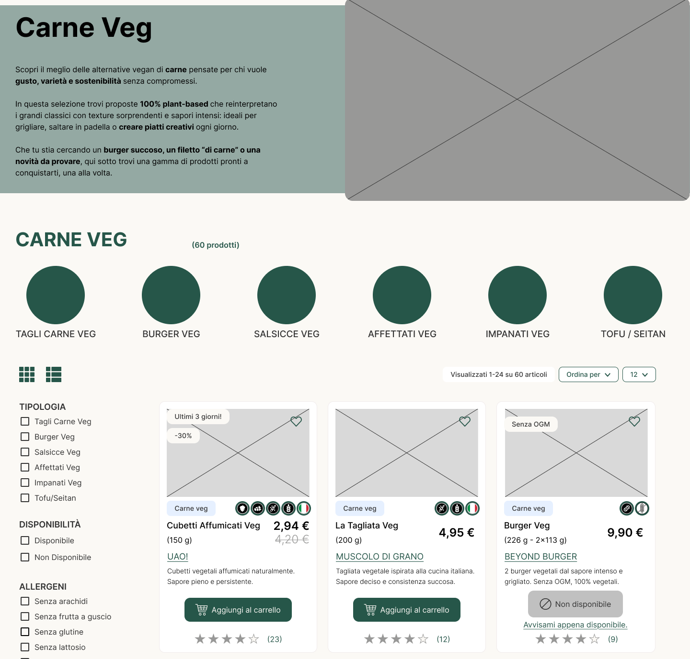
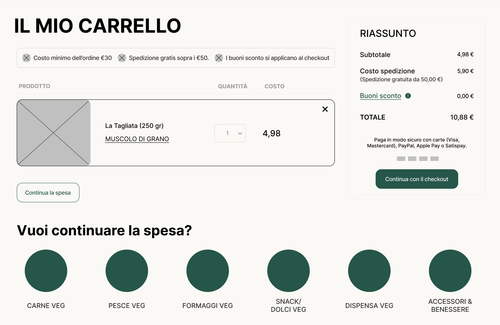

Observation
Recording layout, proportions, spacing and hierarchy with DevTools.
WIREFRAMING 01 · iVEGAN
From the PlantX reconstruction exercise to the proposed architecture, mid-fidelity desktop wireframes and the iVegan shopping wireflow.
The screens shown here use images of the original wireframes. You can also explore the Figma project for the full detail.
FROM PROBLEM TO STRUCTURE
01 · PRELIMINARY EXERCISE
In the first phase, I analysed PlantX and reconstructed the Home, PLP and PDP in desktop and mobile versions. The aim was to understand the existing structure, spacing, alignment and components, including its inconsistencies , not redesign them.
Reviewing Chrome DevTools revealed extensive use of Flexbox, inconsistent margins and gutters, uneven typography, competing CTAs and several contrast issues. I used 12-column desktop and 4-column mobile grids to organise the reconstruction.
Recording layout, proportions, spacing and hierarchy with DevTools.
Mid-fidelity wireframes faithful to the original PlantX pages.
Distinguishing faithful reconstruction from the later iVegan redesign.
02 · PAIN POINTS AND INFORMATION ARCHITECTURE
Evidence from the journeys and accessibility analysis was translated into concrete goals: unify site and shop, make search, wishlist, account and cart immediately recognisable, make costs and thresholds explicit, and give trust content more space.
The new structure distinguishes product access, ethics and sustainability content, and shopping services. The sitemap in the slides includes link types and dynamic behaviours; the version shown here is a summary rather than the complete structure.
Site/shop and categories are disconnected.
Organised navigation and products that are easier to reach.
Ethics, supply chain, origin and reviews are difficult to find.
Sections dedicated to transparency, brand and certifications.
Thresholds, shipping costs and vouchers appear too late.
Total and conditions visible throughout the journey.
03 · MID-FIDELITY WIREFRAMES
The iVegan wireframes were developed with a Bootstrap grid of 12 columns, 15px margins and 30px gutters . Inter styles and a Minor Third (1.2) modular scale were defined for typography; greys and blue distinguish structure from actions.
The screens were selected for their role in the funnel: from the homepage and catalogue browsing, through the product page and cart, to the Ethics & Sustainability Hub.
01 · HOME
Top bar with language choice and app access; primary CTA and sections for ethics, categories, offers and reviews.
02 · PLP
Breadcrumb, diet and sustainability filters, result count, informative cards and sorting.

03 · PDP
Availability, brand, allergens, reviews, impact and a CTA aligned with product status.

04 · CART
Pop-up and summary with total, minimum threshold, shipping, discounts and checkout.

05 · ETHICS HUB
Content about ethics, sustainability, supply chain, certifications and a link to the shop.

04 · DESKTOP WIREFLOW
The Pt. 1 wireflow takes the user from accessing products to confirming the order. It represents login/sign-up, address entry and payment selection. The focus is experience continuity, not testing results on an already developed product.
Vegan products → Vegan meat
Product selection and add to cart.
Total, thresholds, vouchers and access to checkout.
Social or email access; cart preserved.
Delivery details, payment method and confirmation.
OUTPUT · WIREFRAMING 01
Faithful reconstruction based on PlantX.
New sitemap and redesign requirements.
Five desktop areas and a shopping wireflow.